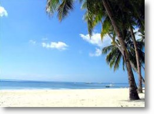
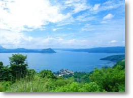

|

Principal centro turístico del
país, situado en la provincia de Aklan en el noroeste de la Isla de
Panay, cuenta con playas de una gran calidad, así como alguno de los
principales complejos turísticos del mundo. Se puede llegar en avión
al aeropuerto de Kalibo o de Caticlan, o por mar en ferry desde
Manila. Cuenta con 209 alojamientos turísticos con un total de 1.577
habitaciones, aunque tiene previstas una capacidad de hasta 4.000.
|

Es una ciudad rural en la provincia de Cavite a 2.250
pies de altitud, desde donde se pueden contemplar
el volcán y el lago Taal. Cuenta con el turismo de
aventura y naturaleza y por la cercanía de las playas
de Batangas y de Cavite como lugar de excursión
de un día. |